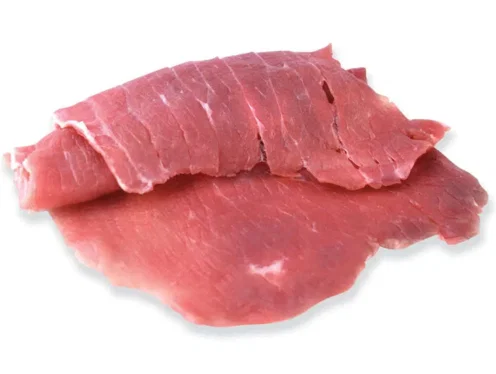

Perfil sensorial
Color
Rojo brillante
NOM-251-SSA1-2009
Olor
Característico
NOM-251-SSA1-2009
Textura
Firme
NOM-251-SSA1-2009

Solicitar cotizaciónFicha técnica · CS-FT-5
SKU 114 · Revisión 01 · Vigente desde 07 mayo 2026

Corte plano y delgado obtenido de la pulpa, congelado y listo para la operación hotelera y restaurantera.
Almacenar fresco
Vida útil: 30 días
Almacenar congelado
Vida útil: 52 semanas
Los tiempos se garantizan siempre que se cumpla permanentemente la cadena de frío.